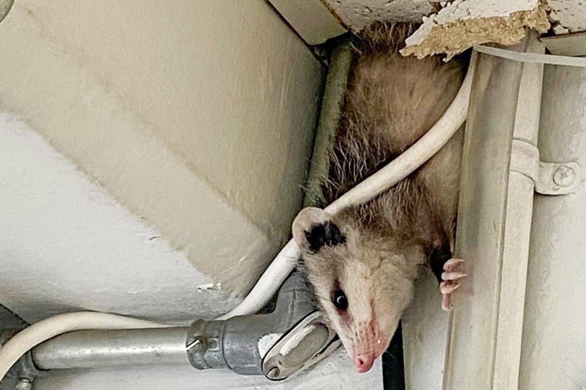
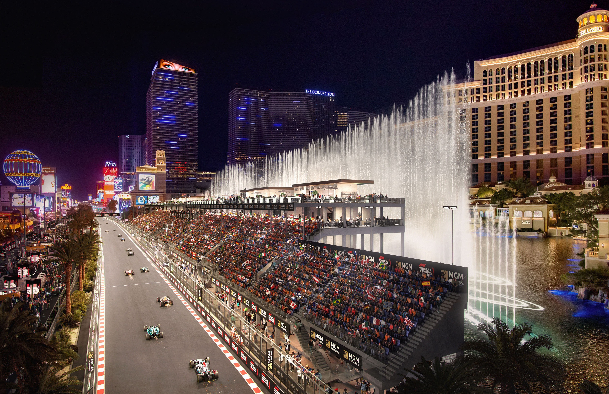

From Sin City to Sports Capital: The Ascendancy of the Las Vegas Sports Scene
Brandon Novarro | May 16, 2023 • 4 min
Once synonymous with the neon allure of decadence, the city of Las Vegas has now transformed into a formidable sports powerhouse, a metamorphosis best encapsulated by the impending arrival of the Oakland Athletics. The team recently reached an agreement to develop a potential 30,000-seat stadium on the Tropicana hotel site along the Las Vegas Strip. Struggling under the headline-grabbing trifecta of frugal ownership, attendance figures rivaling minor league teams, and even the odd possum running amok in their stadium, this franchise seeks to turn the page. As they prepare to close the chapter on their moneyball era, they look toward a fresh start, an exciting new narrative in Sin City. A city known for its poker tables and slot machines now beckons with the promise of consistent professional sports entertainment.
Possum photographed in the ceiling of visiting team TV booth at Oakland Coliseum
Vegas, long considered a gambler's paradise, is fast becoming an athletes' playground. In addition to the Athletics who are expected to head to Sin City, this multifaceted city is now home to the Vegas Golden Knights, the Las Vegas Raiders, and the Las Vegas Aces, commanding respect in the NHL, NFL, and WNBA, respectively. Before the Golden Knights agreed to call Vegas home in 2017, there were zero professional teams in the area. A decade later, the city will be home to four. Who knows? Maybe we could see a struggling small-market NBA team come knocking on the door, looking to find a new home in Vegas. But it's not just about the professional teams that call it home. Las Vegas has emerged as a coveted destination for grand sporting events, with its calendars marked for Super Bowl LVIII in 2024 and the College Football Playoff National Championship in 2025. The thrills of Formula 1 racing will soon echo down the Las Vegas strip, as the rapidly expanding sport presents the much-anticipated Las Vegas Grand Prix later this year.
Vegas' transformation into a sports mecca is bolstered by several factors. With a burgeoning metropolitan population exceeding 2 million, the city has a steadily growing fanbase that looks to hit 2.5 million in 2030. Coupled with its status as a global tourist hub that brings in 40 million people globally and the presence of several Fortune 500 companies, Vegas has an indisputable economic advantage. A business-friendly government, lower taxes, and a buzzing economy set the stage for its sports-centric evolution.
But let's not forget Vegas' roots. Its long-standing dominance in sports gambling is a distinctive ace up its sleeve. With over $10 billion in sports betting revenue generated in 2022 alone, Nevada stands unrivaled, its shimmering Vegas jewel leading the charge. As the wheels of the industry keep turning and more states join the bandwagon to legalize it, Vegas will continue to maintain its reign as the global epicenter of sports betting.
The impending arrival of the Athletics in 2025 promises to add another feather to its already impressive cap. With the Super Bowl slated for 2024, the College Football National Title game in 2025, and an F1 Grand Prix revving up later this year, Vegas is steadily making its mark as a major player on the global sports stage.
Rendering of grandstand across from the Belagio for the Las Vegas F1 Grand Prix slated this November
But the real triumph of Vegas lies in its potential. The city provides an invigorating, novel experience for sports fans, contributing to the growth and popularity of sports on an unprecedented scale. Positioned on the threshold of an even brighter sports future, Vegas is raring to go.
The statistics tell the story. A booming population. A vibrant economy. Record-breaking sports betting revenue. Upcoming sporting spectacles. All these factors weave together to form the colorful tapestry of Vegas' ascension as a major sports city.
So, as the neon lights continue to glow, casting long shadows over the athletic fields, the question that lingers is: where does Las Vegas now stand in the hierarchy of top-market sports cities? While not among the top-5 sports market cities, including New York, Los Angeles, Chicago, Philadelphia, and Dallas, will Vegas soon overtake one of them?